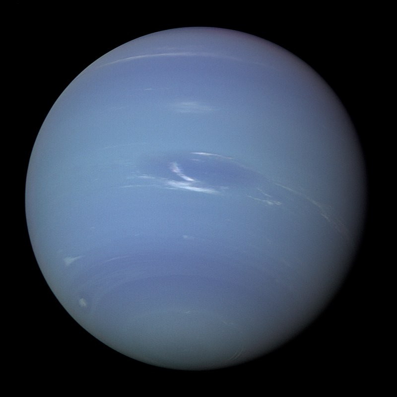

6 milliárd kilométer távolságból nézve Földünk csak egy apró pont (a kékesfehér folt a kép jobb oldalán, körülbelül a barna sáv közepén).
Minden ember történelme azon az apró képponton történt, mely az egyetlen otthonunk.

A Voyager–2 képe a Neptunuszról.
Az űrkutatás a földi légkörön túli környezetnek a világűrbe juttatott eszközökkel történő kutatásával foglalkozó tudomány. A tágabb értelmű űrtanhoz tartozik még a világűr hasznosításának tudománya is. Hasonló értelmű szó az asztronautika és a kozmonautika.
A világ legnagyobb, űrkutatással foglalkozó szervezetei az amerikai NASA, az Európai Űrügynökség (ESA) és az orosz űrügynökség, a Roszkoszmosz (RKA). Csak olyan országok végeznek jelentős űrtevékenységet, amelyek megfelelő anyagi háttérrel rendelkeznek.
Az űrkorszak 1957-ben kezdődött a Föld első műholdjának (Szputnyik–1) az indításával. Azóta sok műhold, űrszonda, űrhajó, űrállomás és más űreszköz jutott el a világűrbe. Az űrkutatás másik két fontos eseménye az ember első űrrepülése (Vosztok–1, 1961) és az első holdra szállás (Apollo–11, 1969). Az űrtevékenységet személyzetes és személyzet nélküli űreszközökkel megfelelő arányban végzik. Az űrhajósok nélküli szerkezetek a felderítést és a beprogramozott műveleteket végzik, az összetettebb tevékenységet az emberekkel repülő űrhajók és űrállomások.
Az első ember a Hold felszínén: Neil Armstrong (1969). A Hold jelenleg az egyetlen földönkívüli égitest, melyen járt ember.
A Mars felszíne a Viking leszállóegység készítette képen
A Hubble űrtávcső által készített kép a Marsról
Voyager–1
A telihold látképe 2010. október 22-én
A Nap a Naprendszer központi csillaga. Körülötte kering a Föld, valamint a Naprendszerhez tartozó bolygók, törpebolygók, kisbolygók, üstökösök stb. A Földtől körülbelül 150 millió km távolságra van, ami fénysebességgel 8,3 perc.
A német V–2 rakéták voltak az első szerkezetek, amelyek eljutottak a világűrbe. A második világháború után ezt a technológiát és a szakembereket az Amerikai Egyesült Államok és Szovjetunió szerezte meg....Ezután indult meg a két fél között a fegyverkezési verseny nukleáris fegyvereket szállító interkontinentális ballisztikus rakéták (ICBM) fejlesztésében. 1961-ben az első szovjet űrhajós repülése után már köztudott volt, hogy űrverseny alakult ki az Egyesült Államok és a Szovjetunió között, amely végül igazságos döntetlennel végződött.
Wernher von Braun volt a német V-2 rakéta projekt irányítója. A világháború utolsó napjaiban több társával együtt feladta magát az amerikaiaknak. Az Egyesült Államokba került, ahol részt vett a rakétafejlesztésben. Megkapta az amerikai állampolgárságot és az első amerikai műhold, az Explorer–1 fejlesztését és indítását végző csoportot irányítója lett. Később a NASA Marshall Űrközpontjában vezette a Saturn V holdrakéta fejlesztését.
Szergej Koroljov vezetésével fejlesztették ki a Szovjetunióban az R–7 Szemjorka és a Szojuz hordozórakétákat, amelyeket napjainkban is használnak. Azonosságát haláláig államtitokként kezelték, még saját családja sem tudhatta, hogy ő felelt a szovjet űrprogram megvalósításáért.
Az űrrepülés szemszögéből, a legtöbbször használt meghatározás szerint a világűr 100 km magasságban kezdődik. Az Egyesült Államokban használják néha az 50 mérföldes meghatározást is. Az első sikeres orbitális indítás a személyzet nélküli szovjet Szputnyik–1 küldetése volt 1957. október 4-én. Lajka volt az első pályára állított állat az év november 3-án. Az első ember által végzett repülés a Vosztok–1 volt Jurij Gagarinnal 1961. április 12-én.
Különbség van a szuborbitális repülés és az orbitális repülés között. 1942. október 3-án egy német V–2 ballisztikus rakéta volt az első sikeresen űrbe juttatott objektum. 1946-ban egy Amerikából indított V-2-n jutottak el először élőlények az űrbe.
Egy másik mérföldkő 2004. május 17-én volt, amikor elindították a GoFast rakétát szuborbitális pályára, az első amatőr űrrepülésre.
2004. június 21-én a SpaceShipOne volt az első privát emberszállító űrhajó, ez utóbbi szintén csak szuborbitális repülést hajtott végre. 2008. szeptember 29-én a SpaceX Falcon–1 hordozórakétája volt az első teljesen magánfinanszírozású rakéta, amely Föld körüli pályára állt.[1]